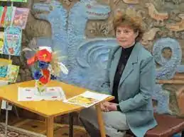

Сучасна українська дитяча письменниця Ніна Воскресенська (справжнє прізвище Мацебула Ніна Василівна) народилася 30 грудня 1960 року в Києві. Дитинство її пройшло на лівобережжі міста, на масиві Воскресенка (звідси й походить псевдонім, під яким друкуються твори письменниці).
З дитинства Ніна багато читала, але тоді "хороші дитячі книжки були дефіцитом. Їх брали почитати у друзів на одну ніч і читали з ліхтариком під ковдрою, щоб батьки не помітили, за ними записувались у чергу в бібліотеці.
Читала пригодницькі твори:Ф. Купера, Ж. Верна, А. Конан Дойля і дуже багато іншого. Всю підряд наукову фантастику… Пам'ятаю, як на уроці позакласного читання виручила весь клас (бо ніхто до того уроку не підготувався), коли десь у 5-му класі почала переказувати зміст "Тореадорів з Васюківки" Всеволода Нестайка. Всі, навіть вчителька, так сміялися, що довелося переказати майже весь твір, аж поки не задзвонив дзвоник". Після закінчення математичного класу школи майбутня письменниця вступила до Одеського гідрометеорологічного інституту, обравши фах океанолога. Закінчивши навчання в інституті, Ніна Мацебула отримала направлення на роботу до Архангельська. Професія океанолога давала можливість багато подорожувати, набиратися вражень, зустрічатися з різними людьми. Проте, океанологом Ніна працювала недовго, бо після розпаду СРСР різного роду наукові дослідження майже не фінансувались. Довелося повертатися до рідного Києва. Майбутня письменниця працювала інженером, програмістом, журналістом, редактором, верстальником, лаборантом у хімічному кабінеті; часто їй доводилося поєднувати кілька спеціальностей. З середини 1990-х почалася літературна діяльність Ніні Мацебули: її вірші, оповідання під різними псевдонімами друкуються в дитячому журналі "Барвінок". Казки в творчості авторки з'явилися після народження сина. Знайомлячи малюка з шедеврами світової та вітчизняної дитячої літератури, письменниця зрозуміла, що казка має бути близькою до сучасності, до реального життя, "щоб на сторінках книги герої опинялися у знайомих дітям ситуаціях. З появою альтернативних дитячих журналів "Пізнайко", "Професор Крейд" авторка почала друкувати свої твори в них. На початку 2000-х Ніна Мацебула (у співавторстві з іншими авторами) бере участь у виданні підручників з основ безпеки життєдіяльності для середньої школи. До сучасної дитячої літератури письменниця увійшла з казковою повістю "Володар Країни мрій", за яку отримала заохочувальний приз міжнародного літературного конкурсу романів, п'єс, кіносценаріїв, пісенної лірики та творів для дітей "Коронація слова-2004". Крім того, цю повість було признано найвдалішою дитячою книгою видавництва "Зелений пес" за 2005 рік. Саме з цього часу всі свої твори письменниця видає під псевдонімом "Ніна Воскресенська". Вдалий дебют надихнув авторку на написання у 2006 році повісті "Останнє бажання короля" — другої книги з циклу про Країну мрій. І, нарешті, наступного, 2007 року, читачі отримали всю трилогію про Країну Мрій. Рівень майстерності талановитої дитячої письменниці зростає з кожною книжкою. В 2008 році на 1-му Всеукраїнському конкурсі творів для дітей "Золотий лелека" у номінації "Авторська казка" Ніна Воскресенська отримала 2-е місце за повість "Руда ворона" і символічну лелеку з крилами-книжковими сторінками. У творчому доробку Ніни Воскресенської безліч дитячих прозових і поетичних творів: декілька невеликих казок, які увійшли до збірки "Дивовижні пригоди Наталки в Країні часу" ("Скринька бажань" — про принца, який мав стати сміливим, щоб бути гідним королем; "Заповітна мрія" — про юного мага, який прагнув, щоб усі люди в його країні були щасливі; "Розповідь однієї плями" — про те, як плями ображаються і бояться дітей, які стають чепурунами й чепурушками), абетки "Веселі Літери", "Ким стати" та веселі оповідки "Першокласні історії" тощо. Ніна Воскресенська — учасниця багатьох літературних конкурсів. У 2016 році за повість "Інше життя Кассандри Котової" авторка посіла 1-е місце на ІV Міжнародному літературному конкурсі "Корнейчуковская премия" (м. Одеса) у номінації твори для дітей молодшого віку, у 2019 р. — диплом за своєрідність поетичного мислення VII міжнародного літературного конкурсу творів для дітей та юнацтва "Корнійчуковська премія" за збірку віршів "Кото сапіенси та інші розумні істоти". Ніна Воскресенська — член Національної спілки письменників України. Письменниця тісно співпрацює з видавництвами "Зелений пес", "Грані— Т", "Навчальна книга — Богдан", дитячими журналами, зустрічається з читачами в бібліотеках. Джерело: https://bibliokids-mrpl.com.ua/images/OurEditions/Voskresenska.pdf